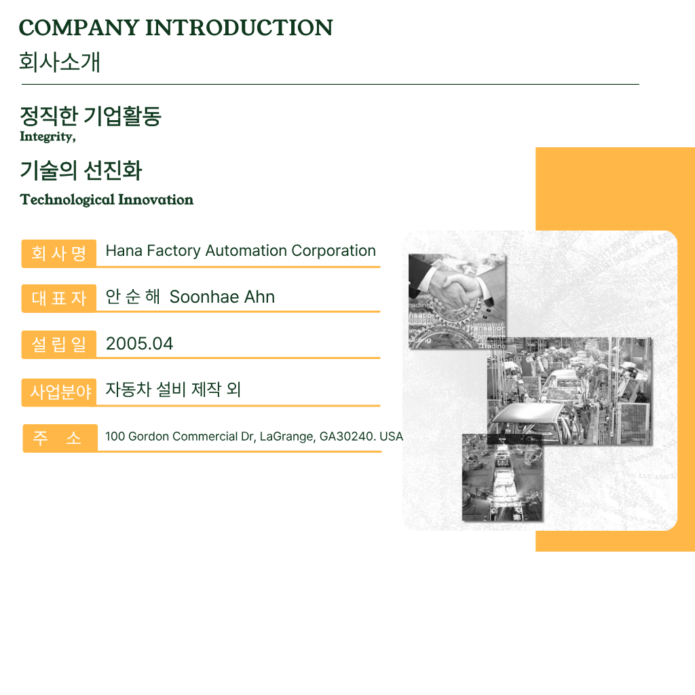

<div class="tab-wrapper" style="text-align: center; padding-top: 90px; padding-bottom: 90px;">
    
    <style>
        .fade-in-target {
            max-width: 100%;
            height: auto;
            display: inline-block;
            
            /* 테두리와 그림자는 지우고 애니메이션만 유지합니다 */
            animation: fadeInUpOnly 1.2s ease-out forwards;
        }

        @keyframes fadeInUpOnly {
            from {
                opacity: 0;
                transform: translateY(40px); /* 40px 아래에서 투명하게 시작 */
            }
            to {
                opacity: 1;
                transform: translateY(0);    /* 원래 위치로 오면서 선명해짐 */
            }
        }
    </style>

    <div class="tab-content">
        
    </div>

</div>
